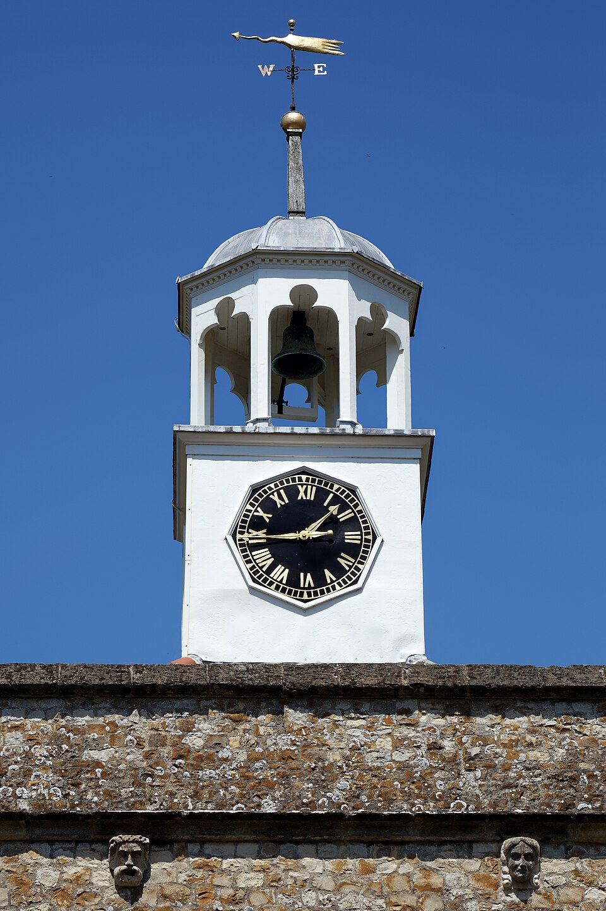

Bir otobüsü beklerken beş dakika bitmek bilmeyebilir; sevdiğiniz biriyle konuşurken aynı süre göz açıp kapayıncaya kadar geçer. Bu, saatin bozulduğu anlamına gelmez. Ama fizik de bütün gözlemcilerin evrende aynı, tek bir saatle ölçtüğü evrensel bir “şimdi” bulunduğunu söylemez. Zamanın farklı akmasının en az iki ayrı anlamı vardır: onu nasıl deneyimlediğimiz ve saatlerin ne kadar süre ölçtüğü.
Önce iki farklı zamanı ayıralım
Gündelik hayatta zamanı saat, takvim ve kronometreyle ölçeriz. Bunlar düzenli tekrarlanan fiziksel süreçleri sayar: Dünya'nın dönüşü, bir sarkacın salınımı ya da atomların belirli geçişleri. Bir saatin gösterdiği süre, zihnimizin o süreyi nasıl hissettiğiyle aynı şey değildir.
Öznel zaman algısı; dikkatin nereye yöneldiği, duygusal durum, uyarılma düzeyi ve olayları nasıl hatırladığımız gibi etkenlerle değişebilir. Bu nedenle “zaman hızlı geçti” sözü, çoğu zaman saatin değil deneyimin tarifidir. Felsefeciler de zamanı ölçme biçiminden ayrı olarak geçmişi, şimdiyi ve geleceği nasıl deneyimlediğimizi tartışır; bu ayrım, zaman felsefesinin temel konularından biridir.
Beklerken uzayan, yaşarken kısalan dakikalar
Bir randevuya yetişmeye çalışırken ya da sırada beklerken dikkatimizi sürekli kalan dakikalara veririz. Zamanın geçişini izlemek, sürenin uzun hissedilmesine katkıda bulunabilir. İlgi çekici bir etkinliğe daldığımızda ise dikkatimiz saatte değil yaptığımız iştedir; etkinlik sürerken süreyi daha az fark edebiliriz.
Geçmişe dönüp baktığımızda değerlendirme değişebilir. İçinde çok sayıda yeni olay ve ayrıntı bulunan bir dönem, yaşanırken kısa ama sonradan uzun ve dolu hatırlanabilir. Tekdüze günler ise yaşanırken ağır geçip geriye dönünce birbirine karışabilir. Bunlar herkes için geçerli katı kurallar değil; süre algısının hem anlık dikkatle hem de belleğin kurduğu anlatıyla ilişkili olabileceğini gösteren gündelik örneklerdir.
Burada fiziksel zamanın gerçekten yavaşladığı sonucuna varmayız. Aynı odadaki iki saat aynı koşullarda aynı süreyi ölçerken, iki kişinin o süreye ilişkin deneyimi farklı olabilir. Zihnin “şimdi”yi kurması ile bir kronometrenin ölçtüğü aralığı birbirine karıştırmamak gerekir.
Görelilikte herkesin ortak bir saati yok
Einstein'ın özel görelilik kuramında uzaktaki iki olayın “aynı anda” gerçekleşip gerçekleşmediği, gözlemcinin hareket durumuna bağlı olabilir. Farklı hızlarda hareket eden gözlemciler, uzaktaki olayları eşzamanlı sayma konusunda aynı sonuca varmak zorunda değildir. Bu, birinin saati yanlış gösteriyor demek değildir; evrende bütün gözlemcilere ortak, ayrıcalıklı bir eşzamanlılık tanımı olmadığını anlatır.
Hareket, iki saatin yeniden karşılaştırıldığında ölçtüğü süreyi de etkiler. Bir gözlemciye göre yanından yüksek hızla geçen bir saatin daha az süre kaydetmesi mümkündür. Yolculuk yapıp başlangıç noktasına dönen iki saatin farklı miktarda zaman göstermesi de, izledikleri uzay-zaman yollarının farklı olmasından kaynaklanır. Her saatin kendi bulunduğu yerde ölçtüğü süreye öz zaman denir. Einstein Online'ın zaman genişlemesi açıklaması, hareketli saatlerin karşılaştırılmasını ve bu etkinin gözlemciye bağlı yönlerini özetler.
Bu fark, günlük hızlarda son derece küçüktür. Bir roket ışık hızına yaklaşan hızlara çıktığında ölçülebilir hâle gelir; kendi içindeki yolcu içinse saati ve bedeni olağan biçimde işler. Görelilik, yolcunun zamanı kendi deneyiminde “ağır çekim” yaşadığı anlamına gelmez. Fark, saatler yeniden bir araya gelip karşılaştırıldığında ortaya çıkar.
Kütleçekimi de saatleri etkiler
Genel göreliliğe göre kütleçekimi güçlü olan bir bölgedeki saat, daha uzaktaki bir saate kıyasla daha yavaş işler. Bu fark Dünya yüzeyinde çoğu zaman hissedilemeyecek kadar küçüktür; ancak hassas saatlerle ölçülebilir ve uydu navigasyonu gibi sistemlerin hesaplarında dikkate alınır. GPS uydularındaki saatler hem uyduların hareketi hem de Dünya yüzeyinden farklı kütleçekimi koşulları nedeniyle düzeltme gerektirir. Neil Ashby'nin GPS ve görelilik incelemesi, bu düzeltmelerin sistemin doğruluğundaki rolünü ayrıntılı biçimde ele alır.
Bu fiziksel etkiyi “herkes zamanı istediği gibi yaşar” diye yorumlamak doğru değildir. Saatlerin ölçtüğü süre, hareket ve kütleçekimi koşullarına bağlıdır; değişim belirli kurallara uyar ve ölçülebilir. Duygularımızın bir dakikayı uzun ya da kısa hissettirmesi ise başka bir düzeyde gerçekleşir.
“Şimdi” herkes için aynı mı?
Fiziksel ölçüm, felsefi soruları tamamen kapatmaz. Geçmiş artık yok olup gitti mi? Gelecek henüz var olmayan bir alan mı, yoksa olayların bütünü zaman boyunca mı düşünülebilir? Felsefede bu sorulara verilen yanıtlar arasında şimdici görüşler ve geçmişle geleceğe de gerçeklik atfeden yaklaşımlar bulunur. Stanford Felsefe Ansiklopedisi'nin zaman maddesi, bu tartışmaları ve zaman deneyiminin yerini ayrıntılı biçimde inceler.
Görelilikte uzaktaki olayların eşzamanlılığı gözlemciye bağlı olduğu için, bütün evreni kapsayan tek bir “şimdi” fikri sorgulanır. Ancak bu fiziksel bulgudan hangi felsefi zaman görüşünün kesin olarak doğru olduğu tek başına çıkmaz. Kuramın neyi ölçtüğü ile gerçekliğin doğası hakkında hangi yorumu benimsediğimiz ilişkili, ama özdeş olmayan sorulardır.
Gündelik hayatta zaman neden farklı hissediliyor?
Bir dakikanın beklerken uzamasıyla uydudaki atom saatinin Dünya'daki saatten farklı işlemesi aynı olgu değildir. İlki dikkat, duygu ve belleğimizle ilişkilidir; ikincisi fiziksel koşullardaki farkın ölçülebilir sonucudur. İkisini ayırmak, “zaman göreceli” ifadesinin hem günlük bir benzetme hem de fiziksel bir kuram olarak kullanılmasından doğan karışıklığı azaltır.
Belki de herkes için aynı akmayan şey tek bir zaman değil, zamanla kurduğumuz ilişkilerdir: bedenimiz süreyi hisseder, saatler onu ölçer, fizik ölçümün hangi koşullarda değiştiğini açıklar, felsefe ise geçmişin, geleceğin ve “şimdi”nin ne anlama geldiğini sorgular. Zamanı düşünmek, bu farklı soruları birbirine karıştırmadan yan yana tutabilmektir.
Zamanın para ve yaşam süresine dönüştüğü bir kurmaca üzerinden bu tartışmayı sürdürmek isterseniz Zamana Karşı filminin felsefi çözümlemesini de okuyabilirsiniz.
Kaynaklar
- “Time”, Stanford Encyclopedia of Philosophy, zamanın metafiziği, fiziği ve zamansal deneyim üzerine.
- “Time Dilation”, Einstein Online, Max Planck Institute for Gravitational Physics.
- Ashby, Neil. “Relativity in the Global Positioning System”, Living Reviews in Relativity, 2003. https://doi.org/10.12942/lrr-2003-1.
- Fotoğraf: Acabashi, Parham House saat kulesi, Wikimedia Commons, CC BY-SA 4.0.